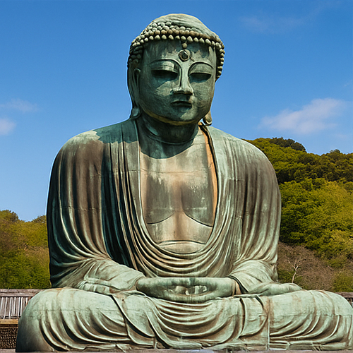

Kamakura Daibutsu – El Gran Buda de Kamakura
Uno de los monumentos más emblemáticos y venerados de Japón, el Kamakura Daibutsu (鎌倉大仏) se alza majestuosamente con 13,35 metros de altura, contemplando serenamente la antigua ciudad costera de Kamakura. Esta imponente estatua de bronce del Buda Amida ha velado durante siglos por peregrinos y viajeros, representando la serenidad, la fortaleza y el espíritu del budismo japonés.
Un testimonio de fe y maestría artesanal
Construido a mediados del siglo XIII, alrededor de 1252, el Kamakura Daibutsu estuvo originalmente resguardado dentro de un gran salón de madera. Sin embargo, tifones y tsunamis sucesivos destruyeron la estructura, mientras que la estatua permaneció en pie, expuesta al cielo abierto durante más de 500 años. Esta resiliencia lo ha convertido en un poderoso símbolo de la impermanencia y la iluminación en la filosofía zen.
Diseño y escala que inspiran asombro
Fundida en bronce con técnicas avanzadas del período Kamakura, la estatua pesa aproximadamente 121 toneladas y es hueca en su interior, lo que permite a los visitantes entrar en el interior del Buda. La expresión serena de su rostro, sus manos en posición de meditación y los pliegues fluidos de sus vestiduras están esculpidos con gran maestría, transmitiendo paz y presencia espiritual.
Kamakura: donde la naturaleza se encuentra con la historia
Situado en el Templo Kōtoku-in, el Kamakura Daibutsu está rodeado de colinas boscosas y cerca del mar, lo que lo convierte en un lugar ideal para la reflexión espiritual y el disfrute de la naturaleza. Es una excursión popular desde Tokio, ofreciendo a los visitantes la oportunidad de escapar del bullicio de la ciudad y recorrer senderos antiguos que una vez transitaron samuráis y monjes.
Información para los visitantes
- 🌸 Ubicación: Templo Kotoku-in, Kamakura, Prefectura de Kanagawa
- 🌸 Horario: 8:00 – 17:30 (cierre a las 17:00 de octubre a marzo)
- 🌸 Entrada: ¥300 (suplemento de ¥20 para entrar en el interior de la estatua)
- 🌸 Acceso: 10 minutos a pie desde la estación Hase (Línea Enoden)
¿Por qué visitar el Kamakura Daibutsu?
El Kamakura Daibutsu es mucho más que una simple estatua — es una experiencia. Ya sea que le atraiga su significado histórico, su belleza artística o su aura espiritual, estar a los pies de este gigante budista es un momento verdaderamente conmovedor. Añada Kamakura a su itinerario por Japón y sienta la silenciosa fuerza de uno de los monumentos religiosos más impresionantes del mundo.
Etiquetas: Kamakura Daibutsu, Gran Buda Japón, Estatua budista Kamakura, Excursión desde Tokio, Templos históricos Japón, Qué ver en Kamakura, Buda Amida bronce, Cultura japonesa
¿Está planificando una visita al Kamakura Daibutsu?
Para vivir una experiencia verdaderamente inmersiva y significativa, le recomendamos reservar un guía privado certificado de nuestro equipo. Todos nuestros guías son profesionales con licencia oficial y reconocidos por el gobierno japonés, y ofrecen visitas personalizadas según sus intereses. Contacte con antelación al guía que haya elegido para confirmar la disponibilidad y recibir asistencia experta para su viaje.